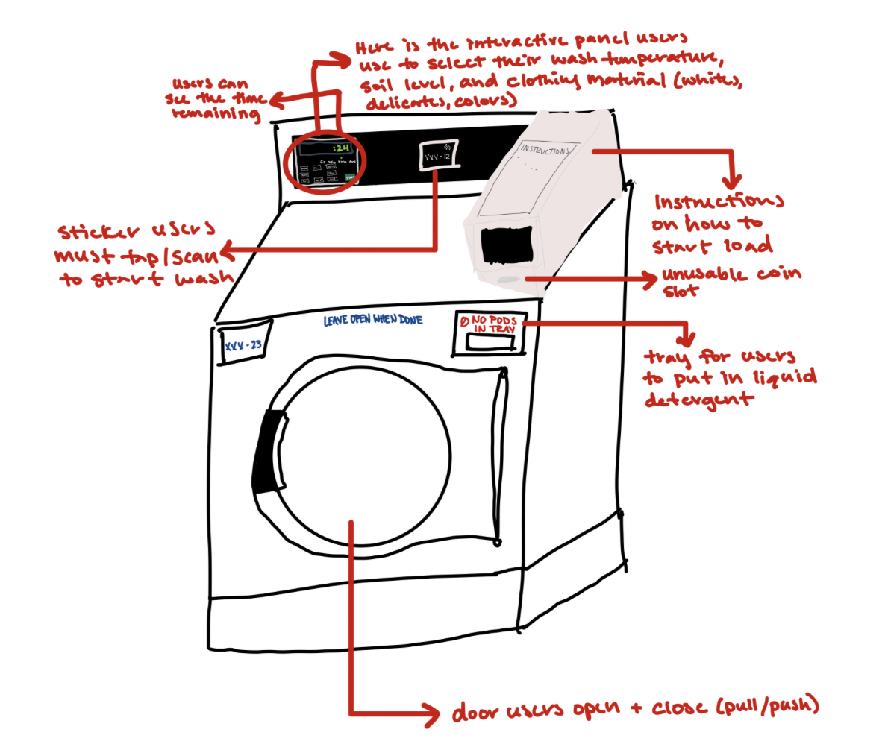

Key Observations
Through direct observation and student interviews, we identified major challenges in the dorm laundry experience. Below are key insights that highlight recurring themes and frustrations faced by users.
📍 Selected Interface: Brown University Dorm Laundry Room
The dorm laundry system is a self service facility where students wash and dry their clothes. Machines require students to scan a QR code via an app to start the wash cycle.
📝 Annotated Sketch & Interface Description
The sketch below outlines the layout of the laundry machines, interactive buttons, and payment system.
🔍 Key Observations
🚪 Difficulty Closing Washer Doors
Many users struggled to securely close the washing machine door, often needing to slam it multiple times.
📱 App Malfunctions & Connectivity Issues
The majority of students had issues with the app loading correctly, leading to long delays or inability to start their laundry.
🛑 Unnecessary Payment Step
Although the machines charge $0.00, students are still required to "process" a payment, adding unnecessary friction.
📏 Machine Height Inconvenience
All users had to crouch or sit on the floor to load their laundry, making the process physically uncomfortable.
🧼 Detergent Location Confusion
Most students placed detergent pods directly in the washer rather than in the detergent tray, possibly due to unclear instructions.
💬 Interview Questions & Summary
📌 Interview Questions
- 1. Can you describe your experience using the laundry machines in this dorm?
- 2. How intuitive do you find the washing machines to use?
- 3. Were there any aspects of the interface (buttons, labels, payment system, instructions) that confused you?
- 4. Have you ever avoided doing laundry at certain times because of the interface or system? If so, why?
- 5. Have you ever considered using an off-campus laundry service instead? Why or why not?
- 6. Do you think the signage or instructions in the laundry room are sufficient? Why or why not?
- 7. How do you feel about the payment method used for the machines? Does it work well for you?
- 8. If you could change anything about how the laundry machines function or are designed, what would it be?
📊 Interview Summary
When conducting these interviews, I was met with a lot of frustration towards the dorm laundry machines, mostly in regards to long wait times, constant app failures, and an overall inefficient process. I was told that the app rarely works on the first try, forcing multiple refreshes, reinstallations, and QR code scans. Sometimes it does not work at all. While all agreed that the interface itself is intuitive with clear signage, students think adding a troubleshooting phone number would help when issues do arise. These students claimed that the biggest issue is the pointless app dependent payment step, which adds unnecessary hassle seeing as the laundry is actually free. Because of these problems, many put off doing laundry until they have no choice, and some avoid it entirely when they are already having a bad day.
💡 Student Suggestions
- Eliminating the App - Removing the app entirely and allowing machines to start with a physical button would mitigate most current issues.
- Improving Signage - Adding a contact number for technical support would be useful.
- Raising Machine Height - Elevating machines would improve comfort and usability.
💬 Direct User Testimonials
"I never do laundry when I am already having a bad day, because the beeping of the machines, the getting down on the floor, and the dysfunctional app can quickly make my day ten times worse."
- Student Interviewee 1"On bad days, the app never loads and I am forced to take my clothes back upstairs without being able to do any of my laundry."
- Student Interviewee 2"This app is the bane of my existence and there literally is no point in using it. I go through this painful process of spending an hour trying to get the app to load, so that when it does, I can click 'pay $0.00'. They don't even require our Brown IDs or anything. It is completely pointless."
- Student Interviewee 3"The signs are helpful since they are laminated, so I don't have to worry about ruining them with water from the washing machines."
- Student Interviewee 1"I wish there was a sign with a phone number to call when the app malfunctions."
- Student Interviewee 2"I had to unplug the washing machine and try rebooting it myself just to avoid using the app."
- Student Interviewee 3